エジプト
| 日付 | 2007年9月10日（月） - 2007年9月17日（月） |
|---|---|
| メンバー | 友人（男2） |
4日目
ホテルから望む日の出。
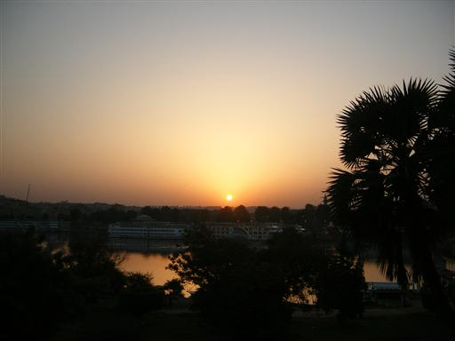
ホテルは中州にあるので西側もナイルの流れが見える。
西岸は砂漠が広がっている。
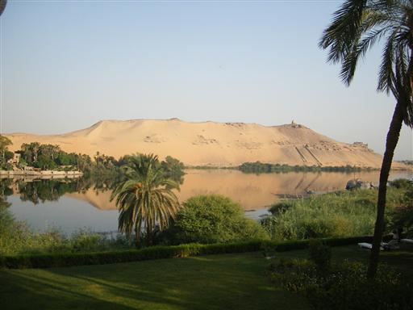
ナイル川岸に立つコムオンボ神殿に行く。
2神が祀られており、通路や部屋が2重構造になっている変わった神殿。

祭壇も2つ造られている。
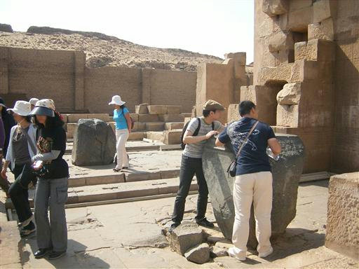
古代のカレンダー。
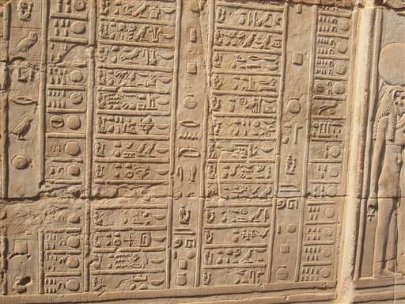
奥の一室にはワニのミイラが展示されている。
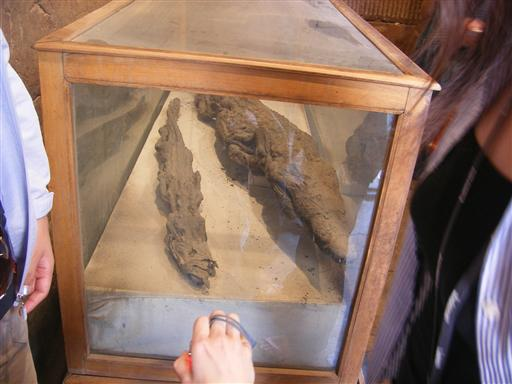
続いてエドフにあるホルス神殿に行く。
保存状態が特に良い遺跡で、非常に美しい。
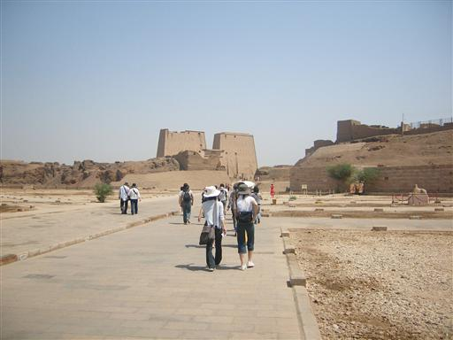
ホルス神殿の塔門。とにかく大きい。
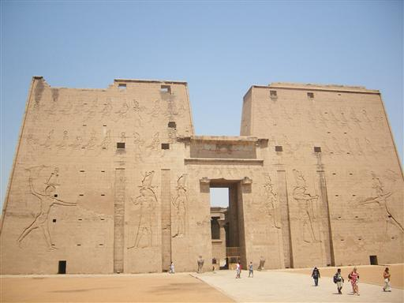
面構えの良いハヤブサの像。
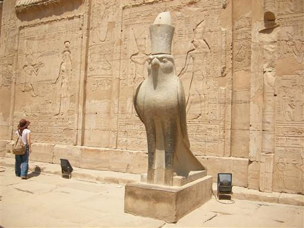
壁にはレリーフがびっしりと彫られている。
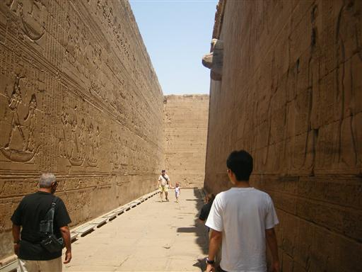
最深部にはホルス神の聖船が置かれている。
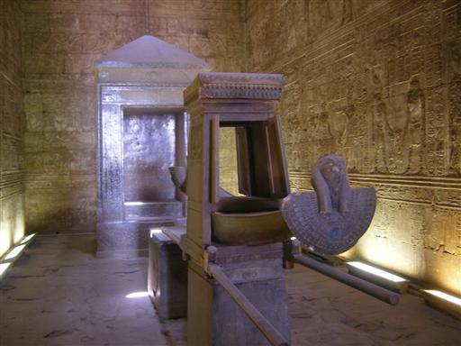
本日の目的地･ルクソールに到着。
古代エジプト最大の神殿・カルナック神殿へ。
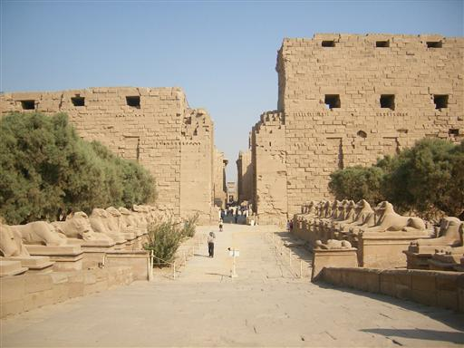
大列柱室。巨大な柱がにょきにょき生えている。
全部で134本あるらしい。
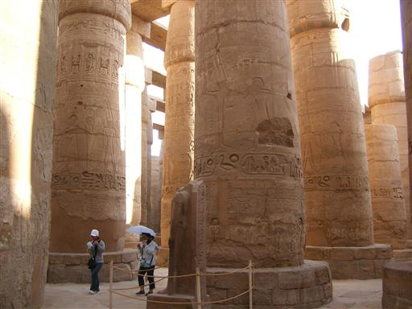
その奥には、背の高いオベリスクが2本立っている。
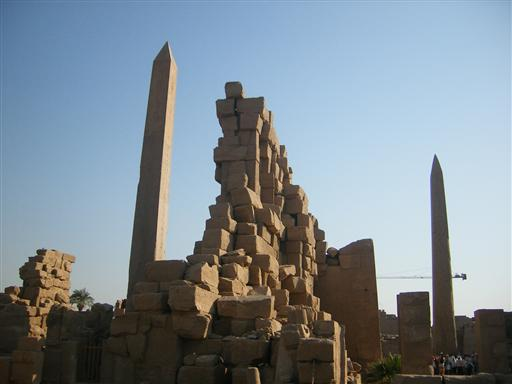
倒されたオベリスク。近くで見ると大きい。
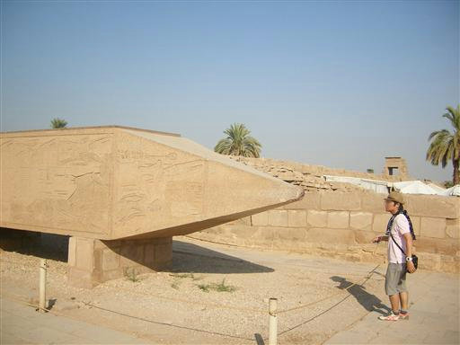
スカラベ（ふんころがし）の像。
周りをまわると願いがかなうらしい…
皆ぐるぐる回っている。
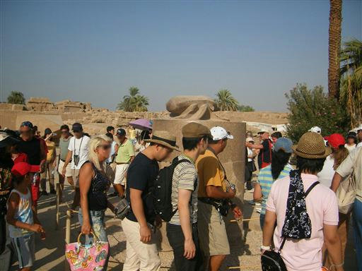
古い神殿なので奥のほうは崩壊が進んでいる。
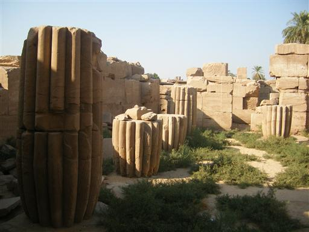
ルクソールにあるガラス屋に行く。
美しいガラス製品が並んでいる。
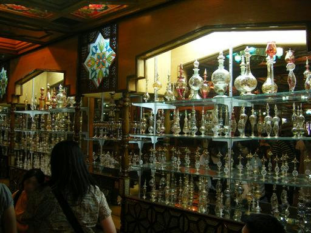
ホテルに到着。ナイルの向こうに夕日が沈む。
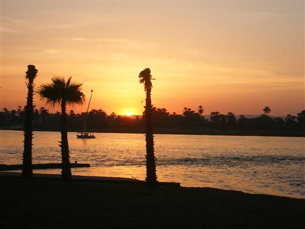
夜はルクソールのスーク（市場）へ出向く。
観光客と見るや、ふっかけてくる。
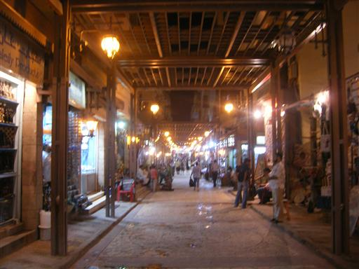
ライトアップされたルクソール神殿。
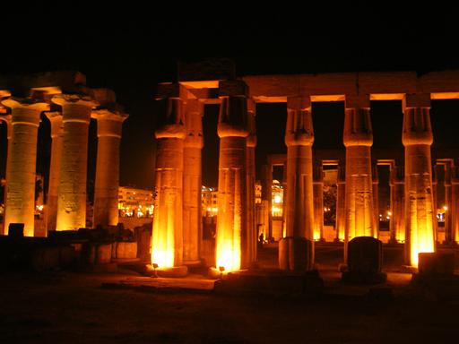